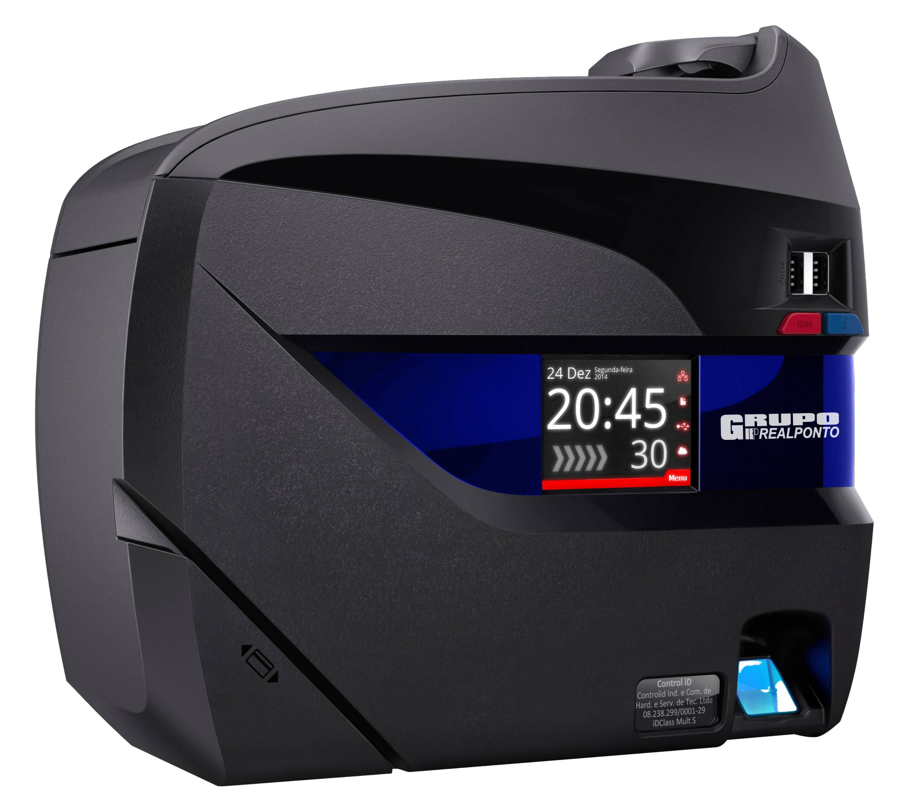
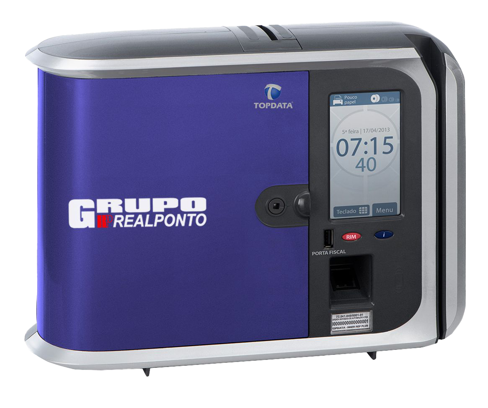
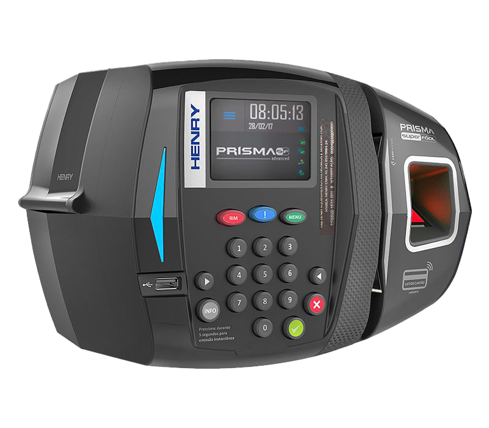
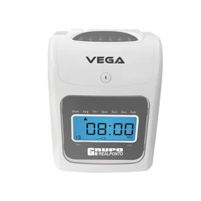

Relógios de ponto
Encontre o relógio ideal para sua empresa
Equipamentos homologados, modernos e preparados para diferentes necessidades de controle de jornada.

IDClass 373
O Relógio iDClass 373 é um equipamento compacto e sem impressão de papel, ideal para empresas autorizadas por acordo coletivo (REP-A). Com tela touch screen, ele realiza a identificação rápida e segura dos colaboradores com opções de biometria digital, cartão de proximidade ou senha.

IDFace
O iDFace atua como relógio de ponto no modelo REP-A, registrando a jornada de forma rápida, higiênica e sem contato físico via reconhecimento facial de alta precisão. Livre da impressão de papel, é a solução ideal para empresas respaldadas por convenção coletiva que buscam modernidade e segurança no controle de ponto.

Inner REP Plus
O Inner REP Plus da Topdata é um relógio de ponto eletrônico REP-C (Portaria 671) certificado pelo Inmetro, que emite comprovante impresso a cada marcação. Uma opção robusta que por meio da identificação biométrica, ou do cartão de proximidade e barras, previne fraudes de registro, elimina filas e otimiza a gestão da jornada de trabalho.

Prisma SF Advanced
O Prisma SF Advanced é um relógio de ponto eletrônico certificado pelo Inmetro, ideal para empresas de todos os portes que buscam segurança jurídica e agilidade. Com tela touch screen, oferece identificação rápida e eficaz com as opções de biometria digital, código de barras, ou proximidade.
